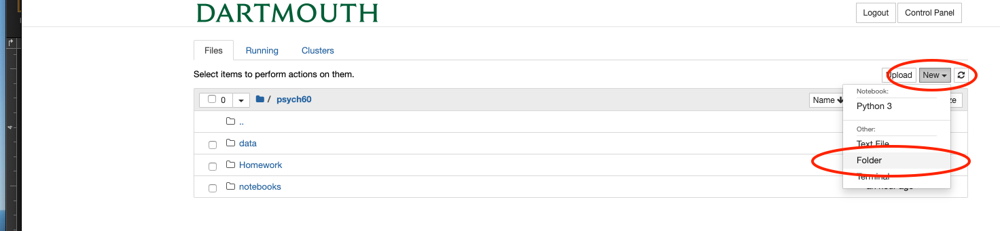
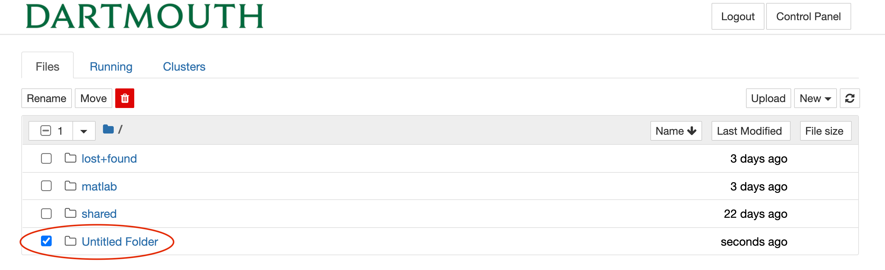

Introduction to JupyterHub¶
Written by Luke Chang & Jeremy Huckins
In this course we will primarily be using python to learn about fMRI data analysis. All of the laboratories can be run on your own individual laptops once you have installed Python (preferably via an anaconda distribution. However, the datasets are large and there can be annoying issues with different versions of packages and installing software across different operating systems. We will also occasionally be using additional software that will be called by Python (e.g., preprocessing). We have a docker container available that will contain all of the software and have created tutorials to download the data. In addition, some of the analyses we will run can be very computationally expensive and may exceed the capabilities of your laptop.
To meet these needs, Dartmouth’s Research Computing has generously provided a dedicated server hosted on Amazon Web Services that will allow us to store data, access specialized software, and run analyses. This means that everyone should be able to run all of the tutorials on their laptops, tablets, etc by accessing notebooks on the jupyterhub server and will not need to install anything beyond a working browser.
Login¶
The main portal to access this resource will be through the Jupyterhub interface. This allows you to remotely login in to the server through your browser at https://jhub.dartmouth.edu using your netid. Please let us know if you are having difficulty logging in.
Once you’ve logged in you should see a screen like this.

The Psych60 folder contains all of the relevant notebooks and data for the course.
Every time you login jupyterhub will spin up a new server just for you and will update all of the files.
Server¶
Every student will be able to have their own personal server to work on. This server is running on AWS cloud computing and should have all of the software you need to run the tutorials. If your server is idle for 10 minutes, it will automatically shut down. There are also a limited amount of resources available (e.g., storage, RAM). Each user has access to 512mb of RAM, keep an eye on how much your jobs are using. The server may crash if it exceeds 512mb.
Jupyter Notebooks¶
Jupyter notebooks are a great way to have your code, comments and results show up inline in a web browser. Work for this class will be done in Jupyter notebooks so you can reference what you have done, see the results and someone else could redo it in the future, similar to a typical lab notebook.
Rather than writing and re-writing an entire program, you can write lines of code and run them one at a time. Then, if you need to make a change, you can go back and make your edit and rerun the program again, all in the same window. In our specific case, we are going to use JupyterHub which lets several people access the same computer and data at the same time through a web browser.
Finally, you can view examples and share your work with the world very easily through nbviewer. One easy trick if you use a cloud storage service like dropbox is to paste a link to the dropbox file in nbviewer. These links will persist as long as the file remains being shared via dropbox.
Do not work directly on the notebooks in the Psych60/notebook folder. These will always be updating as I edit them. Instead, make sure you copy the notebooks you are working on to your own personal folder. These can only be changed by you and won’t be deleted or updated when your server starts.
Opening a notebook on the server¶
Click on Files, then Psych60, then notebooks. Click on any notebook you would like to load. Make sure you copy the notebook to another location outside of Psych60 to make sure your work won’t be deleted.
For example, our first laboratory will be 1_Introduction_to_Programming.ipynb.
Copying Notebook¶
Make sure you copy your notebook to a different directory to make sure it will not be erased when you restart your server.
First, you will need to create a folder called Homework. Click on New then Folder.

Second, you will need to rename folder. Check the box next to the new untitled folder, then click Rename, then type Homework

Third, for all notebooks you will need to save a copy into your homework directory. Go to File then Save as then type in psych60/notebooks/Homework. You will need to do this for each new notebook assignment.

Alternative to Jupyterhub¶
If you use jupyter notebooks on your own computer then you own computer will be doing the processing. If you put your computer to sleep then processing will stop. It will also likely slow down other programs you are using on your computer. I would recommend installing it on your own computer so you can learn more about how to use it, or if you are interested in tinkering with the software or you happen to have a particularly fast/newer computer. We don’t recommend going this route unless you don’t have reliable access to the internet.
Please contact Professor Chang if you want any assistance doing this.
Installing Jupyter Notebooks on your own computer¶
Install python. We recommend using the Acaconda Distribution as it comes with most of the relevant scientific computing packages we will be using. Be sure to download Python 3.
Alternative 1: Install jupyter notebook (it comes with Anaconda)
pip install jupyter
Alternative 2: If you already have python installed:
pip install --upgrade pip
pip install jupyter
Starting Jupter Notebooks on your computer¶
Open a terminal, navigate to the directory you want to work from then type jupyter notebook or jupyter lab
Plotting and Atlases¶
For most of our labs we will be using Python to plot our data and results. However, it is often useful to have a more interactive experience. We recommend additionally downloading FSLeyes, which is a standalone image viewer developed by FSL. It can be installed by either downloading directly from the website, or using pip.
pip install fsleyes
If you are using a mac, you will likely also need to add an X11 window system such as xQuartz for the viewer to work properly.